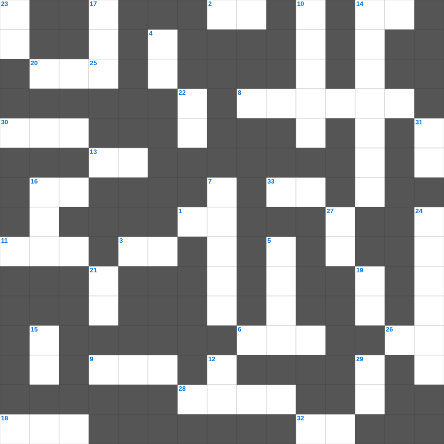

기독교 핵심 상식
📌 서비스 정의
십자가로세로는 교회 주보와 주일학교에서 사용할 수 있는 성경 기반 가로세로 퍼즐 서비스입니다. 성경 인물, 사건, 핵심 구절을 바탕으로 제작되었습니다. 온라인 풀이 및 인쇄 기능을 제공합니다.
오늘은 기독교의 주요 내용을 담은 기독교 주일학교 퀴즈를 준비했습니다. 총 35개의 힌트가 있으며, 주일학교 교재나 성경공부 자료로 활용하기 좋습니다. 무료로 즐기는 기독교 가로세로 퍼즐을 지금 바로 풀어보세요!

📝 가로 힌트
1. 성소 안에 있는 일곱 줄기의 등불
2. 엘리야가 회오리바람을 타고 간 곳
3. 안식일에 밀 이삭을 잘라 먹은 제자들
6. 구름 기둥과 이것 기둥
8. 도끼가 물 위에 떠오른 기적
9. 부지중에 지은 죄를 속하기 위한 제사
11. 요셉의 채색옷에 묻힌 피
13. 만나가 썩지 않도록 안식일 전날 거둔 양
14. 마음이 가난한 자가 받는 복
16. 곳곳에 기근과 이것이 있으리니
18. 솔로몬 성전 건축에 쓰인 고급 나무
20. 엘리야가 바알 선지자와 대결한 산
26. 광야에서 하늘에서 내려온 양식
28. 하나님이 아브라함에게 아들을 바치라 한 산
30. 대제사장의 흉패에 박힌 보석 개수
32. 성령의 9가지 열매 중 첫 번째
33. 다윗이 왕이 되기 전의 직업
📝 세로 힌트
4. 새 예루살렘 성의 길 재질
5. 베드로가 밤새 그물을 던졌으나 잡지 못했을 때 하신 일
7. 아브라함의 고향
10. 산 위에서 예수님의 모습이 광채로 변함
12. 내가 곧 길이요 이것이요 생명이니
14. 어린아이들이 내게 오는 것을 금하지 말라
15. 노아 시대에 온 세상을 뒤덮은 물 심판
16. 언약궤를 모셔두는 가장 거룩한 장소
17. 예수님이 변화되신 산
19. 나의 이것을 너희에게 주노라
21. 하나님께 예물을 드리는 시간
22. 복음을 전하러 외국으로 나가는 일
23. 하나님은 영이시니 예배하는 자가 신령과 이것으로
24. 모세가 호렙산에서 본 신비한 나무
25. 겨자씨 한 알 만한 믿음이 있으면 이 이것을 옮기리라
27. 십계명이 새겨진 것
29. 하나님의 형상대로 지음 받은 존재
31. 영들 분별함과 각종 이것 말함
🧑🏫 교회 교육 자료 활용
이 퍼즐은 주일학교 교재 추천 자료로 활용할 수 있고, 주일학교 주보에 넣기 좋은 분량으로 구성되어 있습니다. 수업용 주일학교 교안에 활동지로 붙이거나, 예배 후 복습용 주일학교 공과교재로 바로 사용할 수 있습니다.
🏷️ 키워드
기독교 주일학교 퀴즈, 기독교, 십자가로세로, 성경퀴즈, 말씀퀴즈, 가로세로퍼즐, 주일학교 교재 추천, 주일학교 주보, 주일학교 교안, 주일학교 공과교재